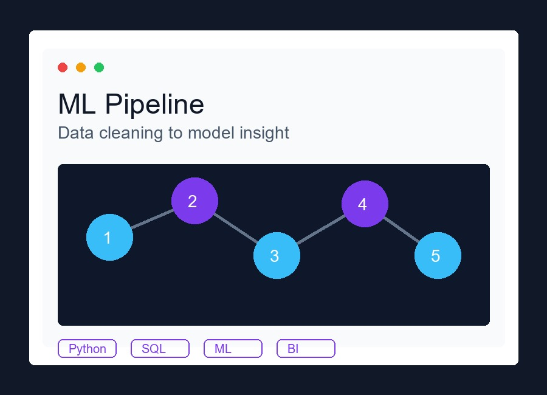
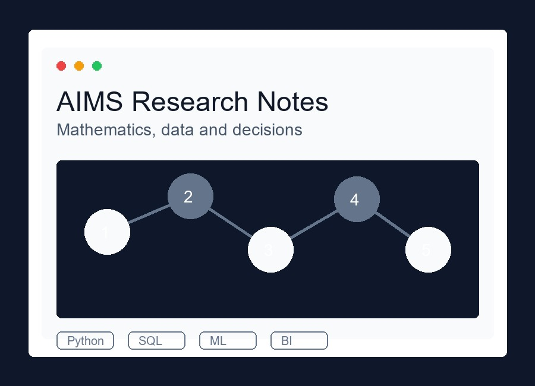
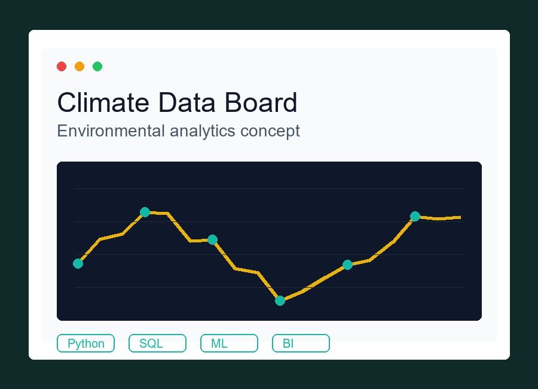
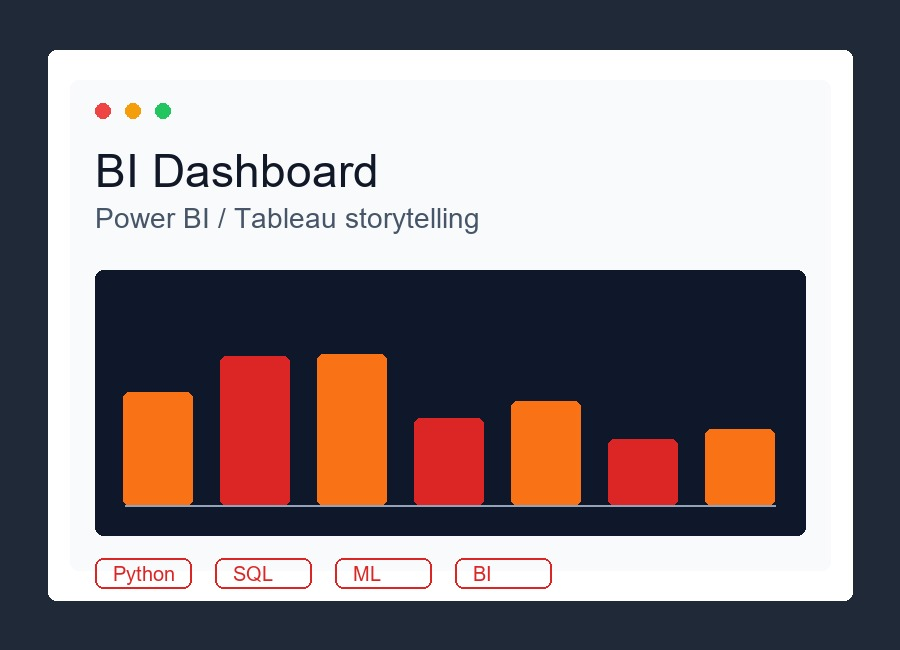
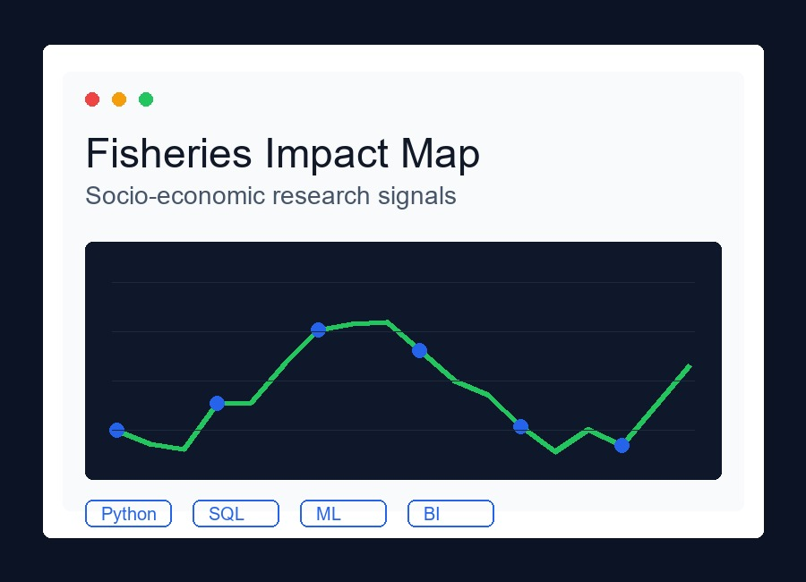
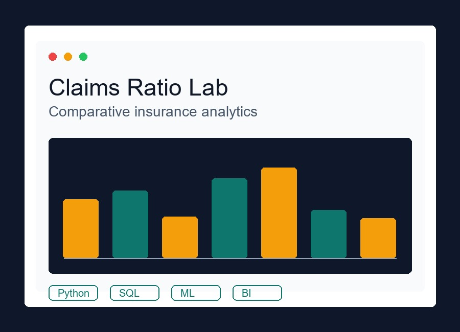

Forecast risk earlier
Compare machine learning models for air quality prediction, then translate the results into model evidence that stakeholders can trust.
Random Forest, XGBoost, SVR, Neural NetsData science portfolio
I am Joel Nyongesa, a Data Scientist and MSc Data Science student at AIMS Senegal. I build analytical systems that move from messy data collection to machine learning, dashboards, and clear research insight.

Impact ledger
Joel's strongest work sits where quantitative modeling meets public decisions, field realities, and explainable outputs.
Compare machine learning models for air quality prediction, then translate the results into model evidence that stakeholders can trust.
Random Forest, XGBoost, SVR, Neural NetsUse submodular greedy logic and optimization to reduce monitoring cost without losing city-level environmental coverage.
Greedy algorithms, convex optimizationDesign surveys, clean multi-source datasets, and prepare BI-ready outputs for fisheries and agriculture policy conversations.
Survey data, Power BI, SPSS, STATAField surveys, open data, scraped data, and institutional datasets.
Validation, missing data handling, feature engineering, and schema design.
Statistical modeling, ML baselines, tuning, and evaluation.
Dashboards, technical notes, presentations, and reproducible reports.
Technical stack
Grouped by the kind of problem it helps solve, from raw data to deployed computer-vision systems and stakeholder-ready insight.
Python, R, Scikit-learn, PyTorch, TensorFlow, XGBoost, Random Forest, SVM, YOLO11, ByteTrack, NLP, Computer Vision, Generative AI.
SQL, PostgreSQL, database design, Power Query, Excel advanced formulas, web scraping, Git/GitHub, Linux, LaTeX.
KoboToolbox, survey design, SPSS, STATA, statistical analysis, data validation, reproducible reporting, policy briefs.
Power BI, Tableau, dashboard-ready datasets, stakeholder reporting, market trend analysis, and decision support.
Resume
Grounded in actuarial science, sharpened through graduate data science, and tested through research analytics.
African Institute for Mathematical Sciences (AIMS), Senegal. Cooperative Programme and Mastercard Foundation Scholar.
Jaramogi Oginga Odinga University of Science and Technology, Kenya.
Kenya Marine and Fisheries Research Institute (KMFRI), Kenya.
Fully funded MSc Data Science scholarship recognizing academic excellence and commitment to impact.
Project evidence
Filter by method or domain to see how the portfolio moves from modeling to computer vision, climate research, data systems, and BI delivery.

Question: How can road traffic videos become reliable counts, tracks, and downloadable evidence?
Built a computer-vision traffic tracker using YOLO11 detection, ByteTrack IDs, FastAPI workflows, directional line-crossing counts, annotated MP4 output, JSONL detections, CSV frame statistics, and a run-comparison dashboard.
Best checkpoint: mAP50 0.843, precision 0.856, recall 0.788 on the reported validation run.

Question: Can one web app compare PyTorch and TensorFlow CNN predictions on natural scene images?
Implemented an Intel Image Classification pipeline with custom PyTorch and TensorFlow CNNs served through a Flask interface for image upload, framework selection, predicted class, and confidence scores.
Reported test accuracy: PyTorch 89.33%; TensorFlow 90.67% across buildings, forest, glacier, mountain, sea, and street classes.
Question: Which model gives reliable AQI prediction from messy environmental data?
Compared Random Forest, XGBoost, SVR, and Neural Networks with cleaning, feature engineering, tuning, and evaluation.

Question: How can a city monitor air quality with fewer sensors and better coverage?
Reduced a planned network from 24 to 12 locations using greedy submodular optimization and coverage logic.
Question: What controls the position and variability of the Intertropical Convergence Zone?
Personalized from my Group Three presentation at AIMS Senegal. I worked on explaining the ITCZ as a convergence, convection, and rainfall belt shaped by solar heating, latent heat release, trade-wind convergence, Hadley circulation, SST gradients, land-ocean contrast, and interhemispheric energy imbalance.

Question: How can farm sensor networks support real-time crop decisions without weakening data governance?
Designed a secure agricultural monitoring platform with a 13-entity PostgreSQL ER model, realistic seed data, a five-layer zero-trust IoT architecture, RBAC, audit logging, mTLS transport, and a Dash dashboard for KPIs, trends, anomalies, and alerts.
Included a MongoDB redesign using embedded farm-field-device-reading documents to reduce joins for high-frequency IoT data.

Question: What do fisheries and livelihood datasets reveal for policy support?
Designed surveys, cleaned multi-source data, and prepared structured datasets for BI and research reporting.
Question: Where are crop prices, trade volumes, and food-security signals shifting?
Analyzed regional market dynamics across Nigeria, Ghana, Senegal, and Burkina Faso for farmer decision support.

Question: How do Kenyan insurers compare on claim settlement performance?
Built a comparative analysis over five companies using relational thinking, SQL-style aggregation, and dashboard outputs.
Question: How can non-technical users move from web data to exploratory insight?
Built an application flow for scraping, cleaning, and EDA reporting so raw web data becomes structured evidence.
Focus areas
Technical depth paired with the discipline to explain what a result means.
Model comparison, feature engineering, hyperparameter tuning, and evaluation.
Cleaning, validation, integration, and reproducible documentation.
Power BI, Tableau, and Excel outputs built for repeated stakeholder use.
AQI forecasting, sensor optimization, and climate-informed analysis.
Survey design, field data, statistical analysis, and policy-ready outputs.
Clear presentations, mentoring, and cross-cultural collaboration.
Contact
Research projects, internships, analytics roles, dashboards, and applied machine learning work.
Available for collaborations in machine learning, dashboarding, research analytics, climate data, and education-focused data science work.